What This Course Is (and Isn't)
Version control
Collaboration, not backup — why history, branches & review exist.
Reproducibility
Why "works on my machine" happens, and the discipline that prevents it.
Automation
Why CI/CD replaces manual, human-run checklists.
Testing & docs
Design feedback and a deliverable — not checkboxes bolted on at the end.
Audience & Format
🎓 Audience
- Basic Python knowledge
- No prior Git/GitHub experience assumed
- Python-only — no C++ track
🧭 Format
- Four sessions, a day and a half
- Building toward one capstone
- Fork · branch · PR · review · merge · conflict · retro
Schedule — Day 1
- 19:00–9:30 — Icebreaker & course overview
- 29:30–10:30 — Session 1: Git & GitHub basics 60 min
- 310:45–12:15 — Session 2: Environment control 90 min
- 413:30–14:00 — (S)nap Talk: GitHub Copilot intro
- 514:00–15:45 — Session 3: Documentation & testing 90 min
- 615:45–16:45 — Session 4: Workflow control (CI/CD) 60 min
- 716:45–17:45 — Session 5 (1/3): Data challenge tag-up
Schedule — Day 2
- 19:00–11:15 — Session 5 (2/3): Merge & integration finished-first
- 211:15–12:15 — Session 5 (3/3): Wrap-up & retrospective
The Running Example
A small astro-image pipeline, built collaboratively by teams of 2–3:
Load frames
Stack / denoise
Detect sources
Photometry
Composite
Objectives
- ✓ Use Git locally and with a remote
- ✓ Understand why some Git operations are risky, not just that they are
- ✓ Know how GitHub's collaborative workflow works: issues, forks, pull requests, review
Why Version Control?

Good old days when we were using floppy disks to save our work…
💾 Local Version Control

- A "database" of changes, on one machine
🖥️ Centralized Version Control

- One central server stores the "database"
- Clients check out files from the server
- CVS, Subversion…
🌐 Distributed Version Control

- Every client has a full copy of the "database"
- Clients can work offline
- Clients can share changes directly with each other
The Three States

Working directory
The files you're editing.
Staging area
What goes into the next commit.
git add: working dir → staging. git commit: staging → repository, "permanently" (see rewriting history, later).Everyday Commands

git init # start a new repo
git status # what's changed, what's staged
git add <path> # stage a change
git commit -m "message" # record staged changes
git log --oneline # history
git diff # unstaged changes
git diff --staged # staged changesBranches
🌿 What's a branch?
- Just a movable pointer to a commit
- Cheap to create, cheap to switch
- This is what makes parallel, independent work possible
git branch — Create a Branch

$ git branch testingtesting, is created — HEAD still points to master.git switch — Move the Pointer

$ git switch testingHEAD now points to testing — the working directory updates to match.git commit — Advance the Branch

$ git commit -a -m "made a change"testing branch moves forward. master is untouched — HEAD follows whichever branch is checked out.Merging Branches

git switch master
git merge iss53Merging & Conflicts
⚠️ When it happens
Two branches changed the same lines of the same file — Git can't guess which you want.
Rebasing
🔄 An alternative to merging
- Replays one branch's commits on top of another
- ✅ pro: keeps history linear
- ⚠️ con: rewrites history — risky once pushed

Remotes: Fetch, Merge, Pull, Push
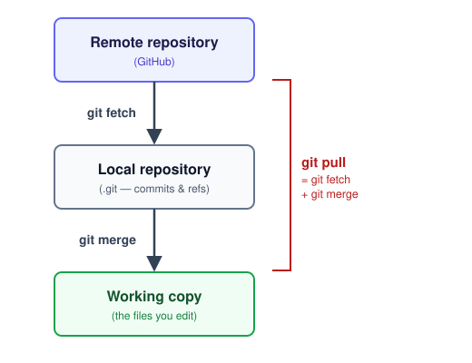
git fetch
Downloads what's new into your local repo — working copy unchanged yet.
git merge
Combines that into your working copy — same merge as any other.
git pull
Both in one command — a conflict can appear with no separate warning step.
git push
The only one going the other direction.
Rewriting History — Why It's Risky
git commit --amend # fix the most recent commit
git rebase -i HEAD~3 # rewrite the last 3 commits interactivelyLive Demo: "Deleted" ≠ "Gone"
The mistake we actually made building the data-challenge repo: 5 generated .npy files committed straight into the seed commit.
1️⃣ Plain rm
Only changes the working directory. git status still shows the file as tracked-but-deleted.
2️⃣ git rm + commit
Gone from HEAD — not from history. git log -- file still finds it.
git rebase -i --root, edit, git rm, commit --amend, rebase --continue.
--force-with-lease — and anyone who already pulled still has the file..gitignore: Preventing This Next Time
# .gitignore
__pycache__/
*.pyc
.venv/
data/frames/ # generated, not source — regenerate, don't commit
.env
*.pem
*_token
credentials.json⚠️ Only affects untracked files
Already committed? Also need git rm --cached <path> once.
🚫 Not a security boundary
A leaked credential must be revoked/rotated — history cleanup alone doesn't undo a clone that already happened.
GitHub: What It Adds on Top of Git
🐙 Platform
Hosts repos, adds issue tracking, PRs + review, Actions (CI/CD), Pages, Container Registry.
📖 Vocabulary
- Repository — a project's Git history, hosted
- Fork — your own copy of someone else's repo
- Issue — tracks a bug, task, or question
- Pull request — "please merge this branch into that one"
Roles: Developer, Reviewer, Maintainer
GitHub's real permission levels: Read < Triage < Write < Maintain < Admin — not a simplification.
| Role | Level | Does |
|---|---|---|
| Developer | Write | Pushes branches, opens PRs, does the coding — most people on a team |
| Reviewer | Triage | Comments, requests changes, approves — cannot push or merge |
| Maintainer | Maintain | Merges approved PRs, manages branch protection — the gatekeeper |
Branching Strategies
A few common conventions for organizing branches on a shared repo:
- Gitflow — most complex
- GitHub flow — simplest
- GitLab flow — most common?
- GitLab flow, alternative
Gitflow
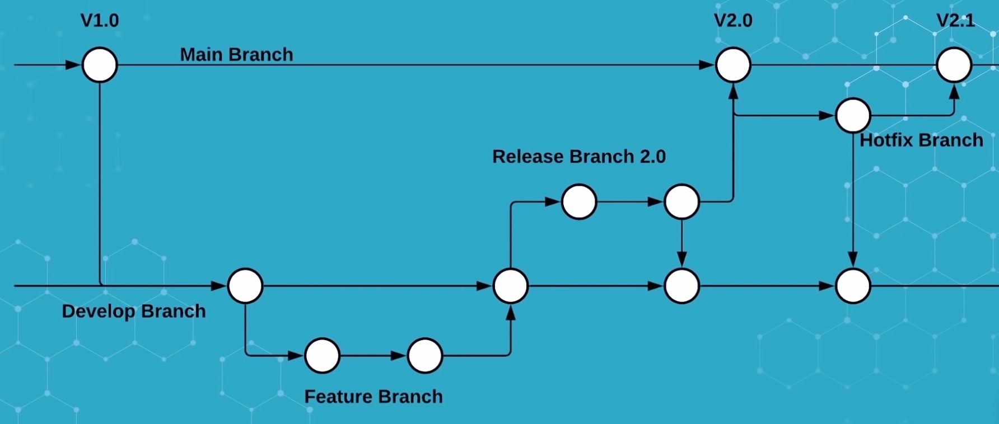
develop, release, and hotfix branches alongside main.GitHub Flow
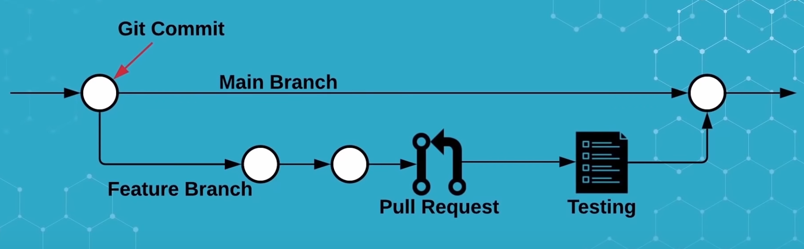
main is always deployable, every change is a short-lived branch off it. What this course uses.GitLab Flow

staging, production).GitLab Flow — Alternative

Workflow the data challenge: GitHub Flow
- ✓
mainis always deployable - ✓ Every change happens on a short-lived branch off
main - ✓ Open a PR early — where discussion happens, not just a final gate
- ✓ Review, address feedback, merge, delete the branch
Fork → Branch → PR, For This Course
Objectives
- ✓ Explain why "it works on my machine" happens
- ✓ The reproducibility vs. replicability distinction
- ✓ Create, export, recreate a Conda/Miniforge environment
- ✓ Build and run a Docker image for the same code
- ✓ Know which tool to reach for, and when neither is enough
Reproducibility vs. Replicability
| Reproducibility | Replicability | |
|---|---|---|
| Nature | Technical | Scientific |
| Question | Done right? | The right thing to do? |
| Answer | Straightforward — yes/no | Difficult to judge — it depends… |
| Role | Verification | Validation |
| In computing | Same software + params + data → identical result? | New software + same params (or not) → equivalent result? |
What's a Computation, Really?
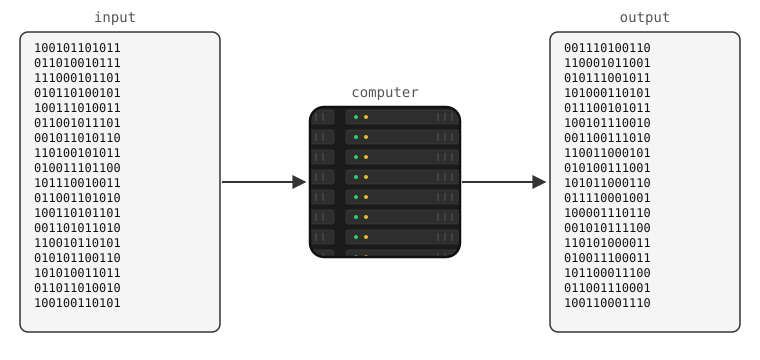
Nothing Here Is Smooth
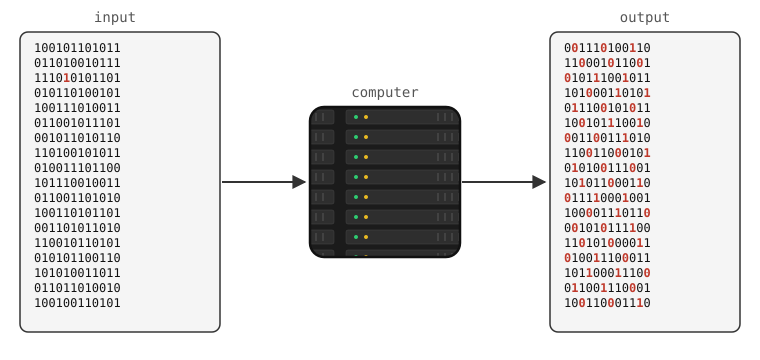
Data and Code
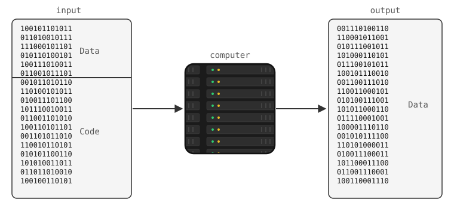
…and Environment
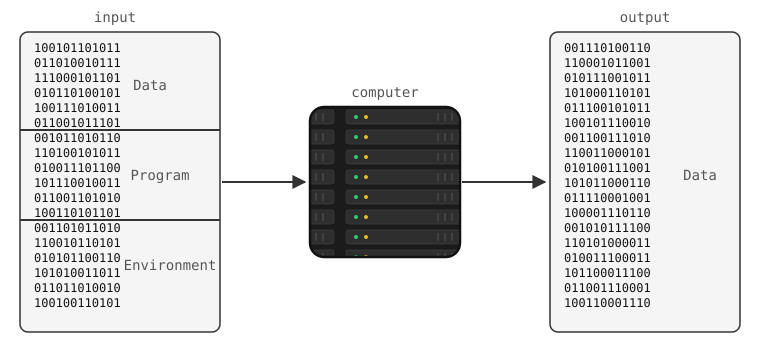
Whose Problem Is Which Layer?
| data | program | environment | |
|---|---|---|---|
| Scientist's view | my research | my colleagues' code | stuff I don't care about |
| Engineer's view | my colleagues' data | my code | stuff I don't care about |
| What's actually true | zeros and ones | an interpretation of the data | an interpretation of the program |
How to Manage Environments?
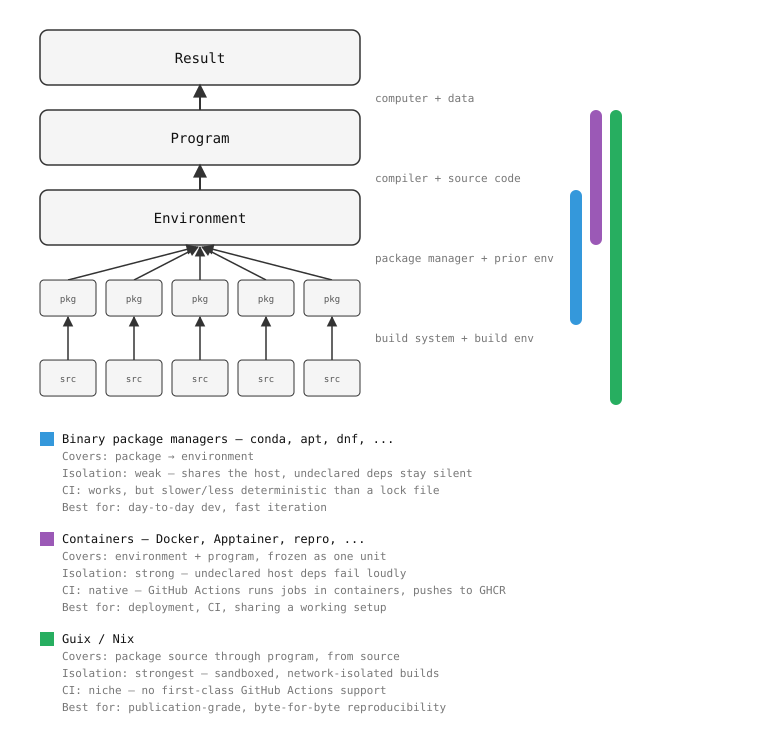
Comparing the Tools
| Tool | Reproducibility | Isolation | Best for |
|---|---|---|---|
| Conda | Limited (resolver drift) | Weak — shares host | Day-to-day dev, prototyping |
Conda + conda-lock | Better (hashes, pinned) | Weak | Shared dev environments |
| Docker | High, if base image pinned | Strong — undeclared deps fail loudly | Deployment, CI |
| Guix/Nix | Bitwise exact | Strongest — sandboxed | Publication-grade research |
Conda / Miniforge
⚠️ Watch out
Anaconda's defaults channel is under a commercial license — many institutions restrict it. Use conda-forge instead (what Miniforge ships by default).
Spot the Problem
channels: [defaults]
dependencies:
- python=3.7
- numpy=1.18.5
- pandas=1.0.5
- pip:
- scikit-learn==0.22defaults channel (license) · hard-pinned to old versions (no security updates, brittle) · scikit-learn via pip when conda-forge has it too.conda-forge channel, version ranges (python>=3.10,<3.13), let conda resolve.Containers: Docker
📦 What it buys
- Packages OS libraries and code together
- Isolation + portability — same image, any machine
- Not magic either: pin the base image digest
docker build -t astrolab .
docker run --rm astrolabDemo — Live, Against the Data Challenge Repo
1. Ad hoc environment
conda create -n astrolab python \
numpy matplotlib -y
conda activate astrolab
python -m astrolab.pipelineStops at NotImplementedError — expected, backlog work. Point: this env exists only on this machine.
2 & 3. Share it, then containerize
conda env export --no-builds \
> /tmp/environment.yml
docker build -t astrolab-demo .
docker run --rm astrolab-demoSame error, same code — now runs identically on any machine with Docker.
Exercises — Tonight's Backlog
📋 environment.yml for the repo
Version ranges, conda-forge not defaults, update README's Quickstart.
Split: core deps · optional astroquery extra · clean-machine test
🐳 Dockerfile for the repo
Install deps, copy code, run the pipeline by default.
Split: minimal working image · size/layer optimization · README docs
Objectives
- ✓ Explain technical debt well enough to recognize it
- ✓ Turn docstrings into docs and tests (
doctest), generate an API site - ✓ Know the unit/functional/regression/integration vocabulary
- ✓ Write a unit test, mock a dependency by hand and with
unittest.mock
Technical Debt

Types of Technical Debt
Code debt
Copy-pasted logic; one fix needs applying in N places.
Design debt
Hardcoded paths/thresholds; breaks elsewhere.
Testing debt
A change silently breaks old behavior.
Documentation debt
Future-you loses an afternoon.
Why Testing & Docs Come First
Tests
"I refactored this, I think it still works" → "…and the suite proves it."
Docs
"Why does this do that?" from archaeology → five-second lookup.
Why Test Early

Docs & Tests: Two Halves of the Same Idea
📝 Docstring
The specification you want — what a function should do, for which inputs.
✅ Unit test
Code that checks the function actually behaves that way.
doctest is the extreme case: the same lines are the spec and the check — they can't drift apart.Docstring → Doctest → API Docs
def factorial(n):
"""Return the factorial of n, an exact non-negative integer.
>>> [factorial(n) for n in range(5)]
[1, 1, 2, 6, 24]
>>> factorial(-1)
Traceback (most recent call last):
...
ValueError: n must be >= 0
"""
if n < 0:
raise ValueError("n must be >= 0")
result = 1
for factor in range(2, n + 1):
result *= factor
return resultAPI Doc Tools
| Tool | Setup | Fits |
|---|---|---|
| pdoc today's pick | zero-config, one command | small/medium projects, fast to demo |
| mkdocstrings | needs an MkDocs site | you already want a hand-written docs site |
| Sphinx | most config, most powerful | large/mature projects, historical default |
The README — Every Project's Entry Point
- ✓ What & why — problem solved
- ✓ Setup —
environment.yml/Dockerfile(Session 2) - ✓ Usage — copy-pasteable commands, example I/O
- ✓ Contributing — tests, format, branch/PR workflow (Session 1)
- ✓ Reporting issues & license
Testing Vocabulary
| Type | Checks | Example |
|---|---|---|
| Unit | one function, in isolation | add(2, 3) == 5 |
| Integration | multiple components together | API call reaches the DB and back |
| Functional | a full feature/scenario | load → train → check accuracy |
| Regression | a bug, once fixed, stays fixed | test added the moment you fix it |
Unit Tests Are More Than Testing
- ✓ Forces you to think through your internal design
- ✓ Forces a spec for internal APIs nobody would write down otherwise
- ✓ A green suite is permission to refactor without re-litigating "does this still work?"
- ✓ Encodes corner cases already fought through
- ✓ Outlives the implementation — a spec you can carry into a rewrite
Demo — Part A: Docs, Against the Data Challenge
python -m pytest --doctest-modules \
astrolab/io.py astrolab/synth.py
pdoc astrolab>>> example just ran as a test. pdoc then generates a full API reference — nothing written by hand beyond the docstrings already in the code.Demo — Part B: First Unit Test
class Particle:
def __init__(self, pos_x, vx): ...
def move(self, dt): ...
def test_constructor(self):
p = Particle(pos_x=0.0, vx=2.0)
self.assertEqual(p.get_x(), 0.0)
self.assertEqual(p.get_vx(), 2.0)
def test_move(self):
p = Particle(pos_x=0.0, vx=2.0)
p.move(dt=3.0)
self.assertEqual(p.get_x(), 6.0)Demo — Mocking
pread(0,5) twice, assert the mock was called once — the second read must be served from cache. A real backend would make this slow and awkward to write.Bonus: a Real Bug Hunt With MALT
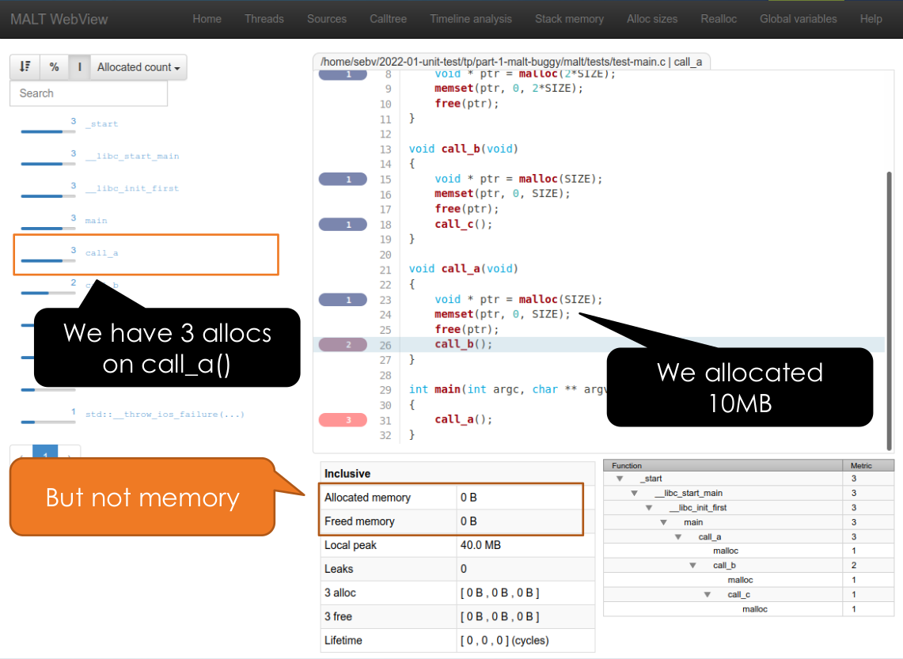
Integration test
ctest -V — something's off, somewhere in the whole program.
Unit tests
ctest -R {TEST_NAME} -V — one file, one function, a five-minute find.
Conclusion: Write Them, But Write Them Well
def test_elastic_collision(self):
p1, p2 = Particle(0.0, 1.0), Particle(5.0, -1.0)
result = elastic_collision(p1, p2, dt=10)
self.assertIsNotNone(result) # checks nothing about the physicsAI Code Assistants: Draft, Not Verdict
🚀 Removes the last excuse
Copilot drafts a docstring from your function, or a first-pass test from your docstring, in seconds.
⚠️ Review it like a teammate's PR
A plausible docstring or test describing the wrong behavior is worse than none.
Exercises — Tonight's Backlog
🧪 astrolab.synth tests
Determinism · shape edge cases · statistical sanity
🧪 astrolab.io tests
Round-trip · error paths · shared test layout
📚 API doc site
pdoc/mkdocstrings · missing docstrings · README link
Objectives
- ✓ Explain what CI/CD automates, and why
- ✓ Use pixi's project-scoped, lockfile-native workflow
- ✓ Write a GitHub Actions workflow that runs on every push
- ✓ Build and push a Docker image to GHCR automatically
Why Automate?
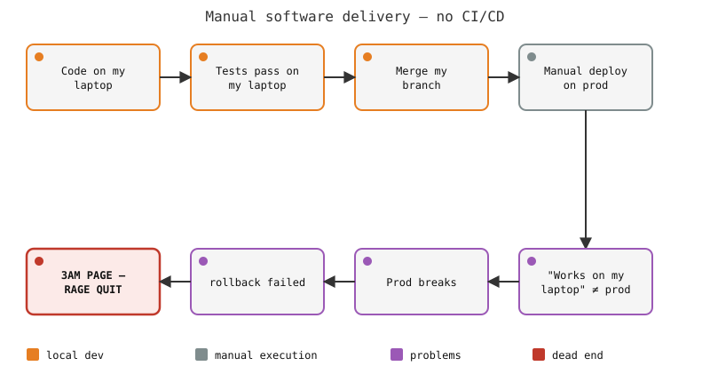
DevOps & CI/CD
DevOps
Treat "build, test, release, operate" as one continuous, shared responsibility — not "dev throws it over the wall."
CI/CD
CI: same checks, same clean environment, automatically, every push. CD: extend that to shipping the result.
The Automated Replacement
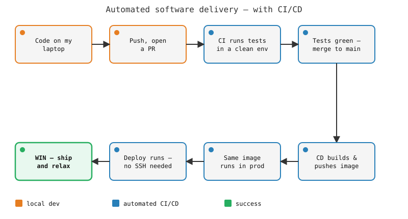
pixi: Project-Scoped, Lockfile-Native
Why beyond Conda
- Env lives in the project (
pixi.toml), not~/.conda/envs - Tasks:
pixi run test— everyone, and CI, run the same invocation - Lockfile always, not an opt-in step
- Multi-platform pins in one file
GitHub Actions, Mechanics
📄 Workflow
YAML in .github/workflows/, triggered by events: on: push, pull_request…
⚙️ Jobs & steps
Jobs run in parallel on a fresh runner. uses: a reusable action, run: a shell command.
🔒 Secrets
secrets.GITHUB_TOKEN auto-provisioned per run — never in a commit.
📊 Actions tab
Every run, green or red, full logs per step.
Minimal Workflow
# .github/workflows/ci.yml
name: CI
on: [push, pull_request]
jobs:
test:
runs-on: ubuntu-latest
steps:
- uses: actions/checkout@v4
- uses: actions/setup-python@v5
with:
python-version: "3.11"
- run: python -m doctest main.py -vGHCR: Picking Back Up From Session 2
docker:
runs-on: ubuntu-latest
needs: test # only if tests passed
permissions:
contents: read
packages: write
steps:
- uses: actions/checkout@v4
- uses: docker/login-action@v3
with:
registry: ghcr.io
username: ${{ github.actor }}
password: ${{ secrets.GITHUB_TOKEN }}
- uses: docker/build-push-action@v6
with:
push: true
tags: |
ghcr.io/${{ github.repository }}:latest
ghcr.io/${{ github.repository }}:${{ github.sha }}CI/CD Pipeline, End to End
needs: test — the image only builds and pushes if tests pass first. Two tags: latest (moving) and the commit SHA (immutable).Demo — Live, In a Scratch Repo
- Write
main.pywith a doctest, commit - Add
.github/workflows/ci.yml, push, watch the Actions tab turn green - Break it on purpose (typo the doctest) — watch it turn red, with the failure in the log
- Add the
dockerjob — watch it push to GHCR, pull the image from anywhere
Exercises — Tonight's Backlog
⚙️ CI workflow for the repo
Checkout, setup Python, install deps, run a real check — smoke-check + pytest if tests exist.
🐳 Docker → GHCR
Build on Module 2's Dockerfile, push on every push to main, tag latest + SHA.
Going Further — From CI/CD to MLOps


Objectives
- ✓ One real fork → branch → PR → review → merge cycle
- ✓ Practice developer/reviewer/maintainer roles for real
- ✓ Experience — and resolve — a genuine merge conflict
- ✓ Run a retrospective that treats "we didn't finish" as data, not failure
The Mission, Recap
Load frames
Stack / denoise
Detect sources
Photometry
Composite
NotImplementedError — that gap, plus "no env spec, no CI, no docs, no tests," is the backlog.Three Parts, Two Days
- 15 (1/3) Tag-up Day 1, 16:45–17:45 — team formation, backlog walkthrough, fix roles & workflow
- 25 (2/3) Merge session Day 2, 9:00–11:15 — integrate PRs, finished-first
- 35 (3/3) Wrap-up Day 2, 11:15–12:15 — merge what's left, structured retrospective
Team Formation
Demo: Fork → Branch → PR
gh repo fork jzoubian/software-development_data-challenge \
--clone --remote
cd software-development_data-challenge
git remote -v
# origin -> your fork (you push here)
# upstream -> the shared repo (you open PRs against this)
git checkout -b issue-8-stack-frames
git add README.md && git commit -m "Test the fork/PR flow"
git push -u origin issue-8-stack-frames
gh pr create --repo jzoubian/software-development_data-challenge \
--base main --head <you>:issue-8-stack-framesThe Backlog — From Earlier Modules
- #1
environment.yml— Module 2 — environment.yml, README.md - #2
Dockerfile— Module 2 — Dockerfile, README.md - #3pytest suite for
astrolab.synth— Module 3 — tests/ - #4pytest suite for
astrolab.io— Module 3 — tests/, pyproject.toml - #5API doc site — Module 3 — docstrings, README.md
- #6GitHub Actions CI workflow — Module 4 — .github/workflows/
- #7Docker build + push to GHCR — Module 4 — .github/workflows/, Dockerfile
The Backlog — The Pipeline Itself
- #8Implement frame stacking — mean/median stacking, docstring + doctest showing noise reduction
- #9Implement source detection — threshold + local-maxima, validate against 25 known stars
- #10Implement aperture photometry — sum flux per source, output as a DataFrame
- #11Implement image composition — contrast stretch, save a PNG "hero image"
- #12Real-sky bonus —
astroquery/SkyView call, disk caching,--realflag
pipeline.py and README.md get touched by nearly every task, on purpose. Real projects don't hand every team a private file.Fix Roles & Workflow — Decide Now, Not Tomorrow
👑 Maintainers
2–3 people get Maintain, run Day 2's merge session.
👀 Reviewers
Everyone reviews ≥1 other team's PR before Day 2.
🌿 Branch naming
issue-<n>-<short-slug> so 6+ teams' branches don't collide.
⚔️ Conflict ownership
Agree now who resolves a conflict when two PRs touch the same lines.
Implement the tasks
main.Merge Session: Finished Teams First
gh pr checkout <number> # fetch the fork's branch locally
# read the diff, check CI is green, confirm the review bar
gh pr merge <number> --mergeDemo: Resolving a Real Merge Conflict
gh pr checkout <number>
git fetch upstream main
git merge upstream/main # conflict markers appear
# resolve <<<<<<< / ======= / >>>>>>> by hand
git add pipeline.py
git commit
git push # conflict clears on GitHubFinished Teams: Don't Sit Idle
Wrap-Up: Merge What's Ready
Retrospective — "How Would This Play Out on a Real Project?"
- ? What was the actual bottleneck — the code, or the Git/PR mechanics?
- ? Was your task's scope clear, or ambiguous once you started?
- ? Was the couple-hours estimate realistic?
- ? How did you split the work — did the split hold up?
- ? Out of time: cut scope, ask for an extension, reassign, or hand off with a note?
Going Further
📋 Backlog grooming
Real backlogs get story-pointed, re-prioritized, split further. GitHub Projects → Jira/Linear.
🛡️ Branch protection
Enforce the review bar and CI-must-pass rule your team fixed by convention today.
The Five Principles
Version control
Collaboration, not backup.
Reproducibility
Same code + env + data → identical result.
Testing
Design feedback, not a checkbox.
Documentation
A deliverable, written for a specific reader.
Automation
Mandatory by construction, not by discipline.